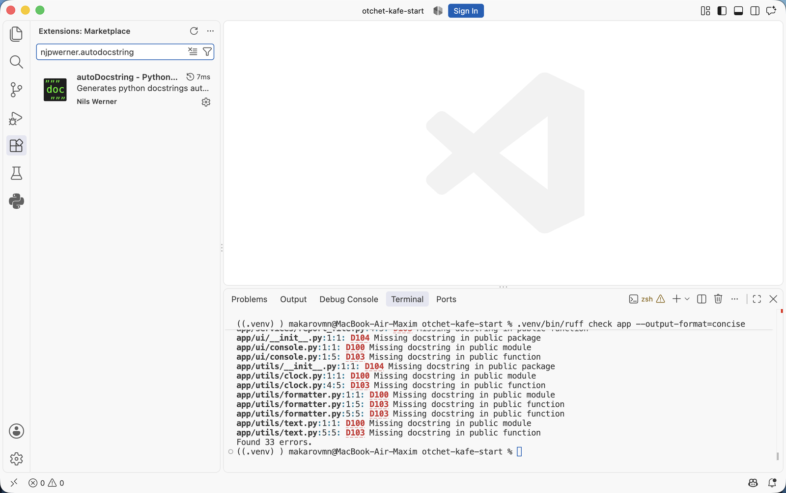
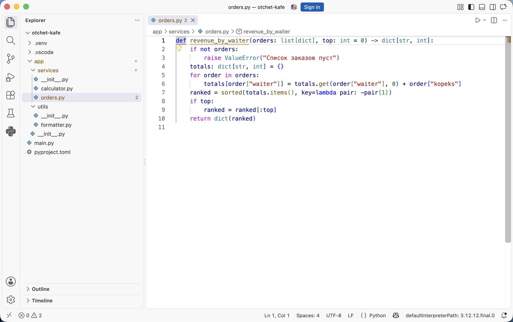
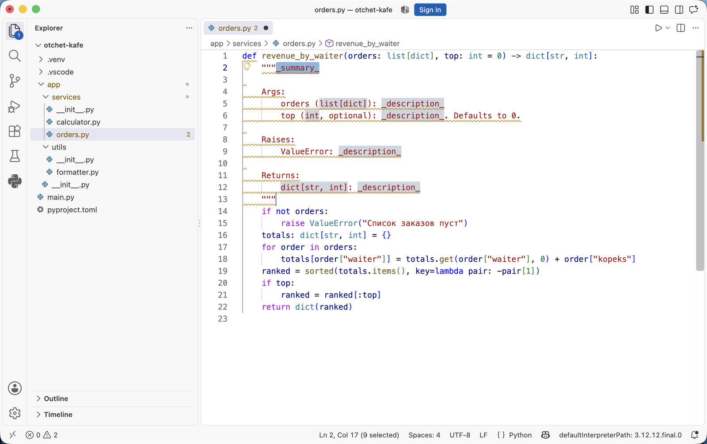
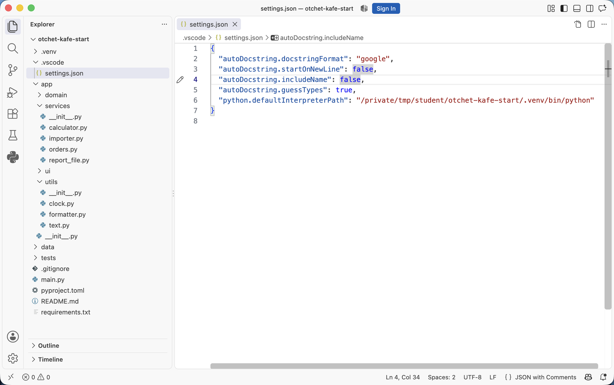
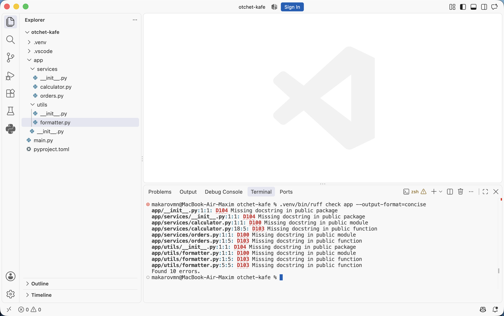
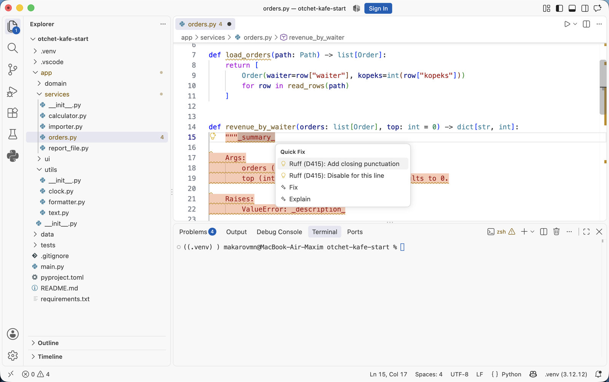
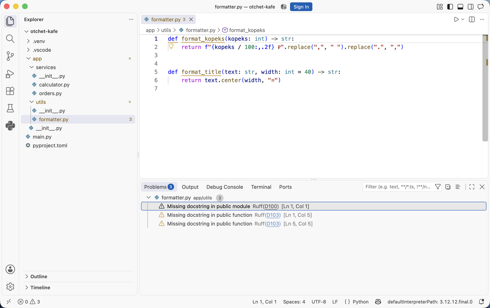

Докстринги и документация кода · МДК.01.01 · разработка программных модулей
Глава 4.5
VS Code:
генератор и проверка
В этой главе редактор начинает помогать с докстрингами. Разобрано расширение, которое создаёт заготовку докстринга по подписи функции, настройка формата в файле проекта, свой шаблон и сниппет, а во второй половине — программная проверка: правила pydocstyle в Ruff, которые находят недокументированные функции и нарушения оформления, и включение этой проверки в запрос на слияние.
- Категория
- Рабочее место
- Уровень
- Начальный
- Опирается на
- Главы 4.2–4.4, тема 02
- Зачем это знать
- Не набирать разделы руками и не искать пропуски глазами
§1Что редактор делает без расширений
Расширение Python от Microsoft вместе с языковым сервером Pylance устанавливается в VS Code одним пакетом и выполняет две задачи из этой темы.
| Возможность | Как пользоваться |
|---|---|
| Подсказка с докстрингом при наведении на имя функции | Указатель на имя, либо CtrlCmd + K, затем CtrlCmd + I |
| Подсказка при наборе аргументов вызова | Открывается сама после открывающей скобки; вызвать заново — CtrlCmd + Shift + Пробел |
Заготовку докстринга по подписи функции встроенные средства не создают. Для этого ставят отдельное расширение.
§2Расширение autoDocstring
autoDocstring — расширение VS Code, которое читает подпись функции и вставляет заготовку докстринга: краткую строку, раздел с параметрами по именам аргументов, раздел результата и раздел исключений, если в теле есть raise. Текст описаний пишет человек, разметку и перечень имён — расширение.
Установка: откройте панель расширений (CtrlCmd + Shift + X), введите в поиске идентификатор и нажмите Install.
njpwerner.autodocstring

Расширение ищут по идентификатору: в поиске есть несколько расширений с похожими названиями, и идентификатор отличает нужное однозначно.
§3Как вызвать генератор
Разберём вставку на функции revenue_by_waiter из файла app/services/orders.py стартового архива. Порядок такой:
- Откройте файл и поставьте курсор на строку с
def— ту, у которой нужно описание. - Нажмите End (CtrlCmd + →) и затем Enter: под подписью появится пустая строка с отступом тела.
- Вызовите генератор любым из трёх способов: наберите три двойные кавычки и нажмите Enter; либо нажмите CtrlCmd + Shift + 2; либо откройте палитру команд (CtrlCmd + Shift + P) и выберите Generate Docstring.
- Заполните поля заготовки, переходя между ними клавишей Tab.

14 — это видно в строке состояния внизу: Ln 14, Col 1. Описания у функции нет, и цифра 4 у имени файла в дереве считает замечания проверки по этому файлу.Генератор вставляет заготовку на место курсора. Если вызвать его, когда курсор стоит в первой колонке строки def, описание встанет выше функции и код перестанет работать. Если курсор окажется на первой строке тела, закрывающие кавычки попадут в одну строку с кодом. Поэтому сначала делают пустую строку — шаг 2 из списка.
После вызова генератора в файл вставляется такая заготовка:
def revenue_by_waiter(orders: list[Order], top: int = 0) -> dict[str, int]: """_summary_ Args: orders (list[Order]): _description_ top (int, optional): _description_. Defaults to 0. Raises: ValueError: _description_ Returns: dict[str, int]: _description_ """

top приписаны optional и Defaults to 0; раздел Raises добавлен из-за raise ValueError в теле; в Returns подставлен тип из аннотации. Серым выделены поля для заполнения, между ними переходят клавишей Tab.Что сделало расширение и что осталось человеку:
| Взято из кода расширением | Пишет человек |
|---|---|
| Имена параметров и их порядок | Что означает каждый параметр и какие значения допустимы |
Типы из аннотаций и признак optional | Смысл значения по умолчанию |
Раздел Raises: с классом исключения | Условие, при котором исключение возбуждается |
Раздел Returns: с типом результата | Что означает результат: единицы, порядок, границы |
| Разметку разделов и отступы | Краткую строку с действием функции |
Оставленные в коде _description_ — это докстринг, который повторяет перечень имён параметров, уже известный из подписи. Проверка из §9 на незаполненные описания не жалуется: докстринг формально есть. Она заметит только _summary_ без точки на конце — правилом D415, и это видно в §11. Поэтому заготовку заполняют, пока функция в работе.
§4Настройка формата в проекте
По умолчанию расширение вставляет формат google. Формат задают явно, чтобы у всех в команде получалась одинаковая разметка. Настройка хранится в файле .vscode/settings.json внутри проекта и попадает в репозиторий вместе с кодом.
{
"autoDocstring.docstringFormat": "google",
"autoDocstring.startOnNewLine": false,
"autoDocstring.includeName": false,
"autoDocstring.guessTypes": true,
"autoDocstring.quoteStyle": "\"\"\""
}

google, три следующих параметра управляют видом заготовки, последняя строка указывает путь к интерпретатору окружения проекта.Значение параметра docstringFormat выбирается из перечня форматов расширения:
| Значение | Что вставляет |
|---|---|
google | Разделы Args:, Returns:, Raises: — формат курса |
google-notypes | То же без повтора типов в скобках |
numpy | Заголовки разделов с чертой из дефисов |
sphinx | Поля :param:, :returns:, :raises: |
pep257 | Краткая строка и место под описание, без разделов |
one-line-sphinx | Поля reStructuredText в сжатой записи |
Для проектов курса подходит google-notypes: типы остаются в подписи функции и в докстринге не повторяются. Начать можно с google и убирать типы вручную, пока формат не стал привычным.
§5Где лежат настройки
У VS Code два уровня настроек. Настройки проекта лежат в папке .vscode рядом с кодом и действуют на всех, кто откроет этот репозиторий. Настройки пользователя действуют на все проекты этого компьютера и в репозиторий не попадают.
| Уровень | Файл | Когда применять |
|---|---|---|
| Проект | .vscode/settings.json в корне репозитория | Формат докстрингов, правила проверки — общие для команды |
| Пользователь |
%APPDATA%\Code\User\settings.json
~/Library/Application Support/Code/User/settings.json
~/.config/Code/User/settings.json
|
Личные привычки: тема, шрифт, сочетания клавиш |
Открыть любой из файлов удобнее через палитру команд: Preferences: Open Workspace Settings (JSON) для проекта и Preferences: Open User Settings (JSON) для пользователя. Путь при этом искать не нужно.
В .gitignore учебных проектов .vscode/ не вносят. Файл настроек проекта — часть договорённостей команды: формат докстрингов, включённые проверки, выбранный интерпретатор. Личные настройки в этот файл не пишут, для них есть настройки пользователя.
§6Полезные параметры генератора
| Параметр | Значение | Что меняет |
|---|---|---|
autoDocstring.docstringFormat | google | Разметка разделов |
autoDocstring.startOnNewLine | false | Краткая строка начинается сразу после кавычек, как требует PEP 257 |
autoDocstring.includeName | false | Имя функции в докстринг не подставляется |
autoDocstring.guessTypes | true | Типы берутся из аннотаций и значений по умолчанию |
autoDocstring.includeExtendedSummary | false | Не вставляет пустой блок под подробное описание |
autoDocstring.generateDocstringOnEnter | true | Работает вставка по трём кавычкам и Enter |
autoDocstring.customTemplatePath | путь к файлу | Подключает свой шаблон вместо встроенного |
§7Свой шаблон
Встроенные форматы меняются через шаблон на языке mustache: в нём подстановки вида {{name}} заменяются данными из подписи функции. Шаблон кладут в репозиторий и указывают путь в настройках проекта.
{{summaryPlaceholder}}
{{#parametersExist}}
Args:
{{#args}}
{{var}}: {{descriptionPlaceholder}}
{{/args}}
{{/parametersExist}}
{{#exceptionsExist}}
Raises:
{{#exceptions}}
{{type}}: {{descriptionPlaceholder}}
{{/exceptions}}
{{/exceptionsExist}}
{{#returnsExist}}
Returns:
{{descriptionPlaceholder}}
{{/returnsExist}}
{
"autoDocstring.customTemplatePath": ".vscode/docstring.mustache"
}
Этот шаблон отличается от встроенного google одним: типы в разделе Args: не подставляются, потому что они уже есть в подписи. Разделы Args:, Raises: и Returns: вставляются только тогда, когда у функции действительно есть параметры, raise в теле и возвращаемое значение.
§8Сниппет вместо расширения
Заготовку можно вставлять и средствами самого редактора, без расширения. Сниппет — шаблон текста, который вставляется по короткому слову и клавише Tab. Сниппеты проекта лежат в файле с расширением .code-snippets в папке .vscode.
{
"Докстринг в формате Google": {
"scope": "python",
"prefix": "dsg",
"body": [
"\"\"\"${1:Действие функции одним предложением.}",
"",
"Args:",
" ${2:параметр}: ${3:ограничения и смысл}",
"",
"Returns:",
" ${4:что означает результат}",
"\"\"\""
],
"description": "Заготовка докстринга с разделами Args и Returns"
}
}
Наберите dsg и нажмите Tab — вставится этот текст, курсор встанет в первое поле, переход между полями по Tab. Имена параметров сниппет не подставляет: он вставляет заранее записанный текст, одинаковый для любой функции. Зато установки он не требует и работает в любой сборке редактора.
§9Проверка докстрингов программой
Генератор вставляет разметку, но не показывает места, где описания нет. Их находит проверка кода. В курсе используется Ruff — программа проверки кода на Python, в которую входят правила pydocstyle: они отвечают за докстринги и обозначаются кодами с буквой D.
Правила включаются в файле pyproject.toml в корне проекта:
[tool.ruff.lint] select = ["E", "F", "D"] [tool.ruff.lint.pydocstyle] convention = "google" [tool.ruff.lint.per-file-ignores] "tests/*" = ["D"]
Три части этого файла означают следующее. Набор "D" включает правила о докстрингах вместе с обычными проверками кода. Строка convention = "google" согласует правила с выбранным форматом: часть правил, относящихся к другим форматам, отключается, чтобы требования не противоречили друг другу. Последний раздел снимает требование докстрингов с папки тестов: имя тестовой функции там само описывает проверяемый случай.
$ ruff check app --output-format=concise

Found 33 errors.: столько мест в проекте пока без описаний. Без ключа --output-format=concise Ruff печатает то же самое подробнее, с фрагментом кода под каждым замечанием.По коду правила его находят в документации Ruff, где описано, что оно проверяет и как исправить.
§10Правила, которые чаще срабатывают
| Код | Что проверяет | Как исправить |
|---|---|---|
D100 | Нет докстринга у модуля | Добавить описание первой строкой файла |
D101 | Нет докстринга у класса | Описать, что представляет объект |
D102 | Нет докстринга у публичного метода | Описать действие метода |
D103 | Нет докстринга у публичной функции | Добавить описание после def |
D104 | Нет докстринга у пакета | Добавить описание в __init__.py |
D200 | Описание из одной строки записано в три | Свести к """Текст.""" |
D205 | Нет пустой строки между краткой строкой и подробностями | Вставить пустую строку |
D209 | Закрывающие кавычки не на своей строке | Перенести кавычки вниз |
D210 | Лишние пробелы вокруг текста в кавычках | Убрать пробелы |
D415 | Первая строка не заканчивается знаком препинания | Поставить точку |
D417 | В разделе Args: описаны не все параметры | Дописать пропущенные или убрать лишние |
Как это выглядит на коде проекта — четыре случая с настоящим выводом проверки:
Какое правило сработаетчетыре случая из проекта
def format_title(text: str, width: int = 40) -> str: return text.center(width, "=")
formatter.py:1:1: D100 Missing docstring in public module formatter.py:1:5: D103 Missing docstring in public function
ИсправлениеДобавить докстринг модуля первой строкой файла и докстринг функции сразу после def.
"""Центрирует заголовок отчёта
Достраивает строку знаками «=» до нужной ширины.
"""
formatter.py:5:5: D205 1 blank line required between summary line and description
ИсправлениеПоставить точку в конце краткой строки и отделить её от пояснения пустой строкой.
"""Считает выручку по официантам.
Args:
orders: Заказы за смену.
Returns:
Выручка по именам.
"""
orders.py:4:5: D417 Missing argument description in the docstring for `revenue`: `top`
ИсправлениеДописать в раздел Args: строку про top. Это правило сравнивает докстринг с подписью функции, поэтому находит расхождение после правки кода.
"""
Возвращает дату для шапки отчёта
"""
clock.py:5:5: D200 One-line docstring should fit on one line clock.py:5:5: D212 Multi-line docstring summary should start at the first line clock.py:5:5: D415 First line should end with a period, question mark, or exclamation point
ИсправлениеСвести к одной строке и поставить точку: """Возвращает дату для шапки отчёта.""". У D212 есть готовое исправление в меню быстрых действий.
Правило D417 отличается от остальных тем, что сравнивает докстринг с кодом: перечень параметров в разделе Args: с подписью функции. Добавленный аргумент, для которого забыли строку описания, находится сразу. Остальные правила проверяют наличие описания и его оформление.
У части замечаний есть готовое исправление. Пример: заготовка генератора оставляет краткую строку _summary_ без точки на конце, и правило D415 предлагает её поставить.

noqa. Вызывается меню сочетанием CtrlCmd + . или из палитры командой Quick Fix.Среди правил pydocstyle есть D401: первая строка докстринга записывается повелительной формой английского глагола. Конвенция google это правило не включает, и для русских описаний в форме «Считает…», «Возвращает…» замечаний не будет. Текущий перечень правил, входящих в конвенцию, приведён в документации Ruff по ссылке в конце главы.
§11Проверка в редакторе и в запросе на слияние
Замечания удобнее видеть во время набора кода. Для этого ставят расширение Ruff, его идентификатор — charliermarsh.ruff. После установки нарушения подчёркиваются в файле и перечисляются в панели Problems (CtrlCmd + Shift + M), а часть из них исправляется действием Quick Fix по сочетанию CtrlCmd + ..

formatter.py. Замечания подписаны источником: Ruff(D100) — нет докстринга у модуля, Ruff(D103) — у двух функций. Справа в скобках строка и колонка; щелчок по строке открывает это место в файле. Цифра 3 рядом с именем файла в проводнике — то же число замечаний.Путь пропущенного описания
def и пишет замечание в панель Problems.
видно сразу
ruff check app печатает файл, строку и код правила.
перед коммитом
Шаги 2 и 3 зависят от одного файла настроек — pyproject.toml, поэтому редактор и терминал показывают одинаковые замечания.
Та же команда запускается в проверках запроса на слияние. В курсе она входит в быстрый набор проверок вместе с форматированием и тестами:
- name: Проверка кода и докстрингов
run: ruff check app
После этого отсутствие докстринга у публичной функции попадает в замечания к запросу на слияние так же, как лишний импорт. Подробно устройство таких проверок разбирается в разделе про CI; здесь важен состав: один запуск ruff check покрывает и оформление кода, и наличие описаний.
§12Мини-практика: десять минут
- Установите расширение
njpwerner.autodocstringчерез панель расширений. - Создайте в проекте файл
.vscode/settings.jsonс параметрами из §4. - Откройте функцию без докстринга, поставьте курсор под подписью, наберите три кавычки и нажмите Enter. Заполните вставленные поля, переходя по Tab.
- Добавьте в
pyproject.tomlразделы из §9 и выполнитеruff check app. Разберите каждое замечание по таблице §10. - Исправьте замечания и добейтесь вывода
All checks passed!. - Добавьте в функцию новый параметр, не дописывая раздел
Args:, и запустите проверку снова: появитсяD417. Верните докстринг в соответствие с подписью.
§13Частые вопросы
_description_, и текст в них пишет человек._description_ для неё в порядке..vscode/settings.json и pyproject.toml внутри репозитория. Личные настройки остаются в настройках пользователя.§14Проверьте себя
Что именно вставляет autoDocstring и что остаётся человеку?
Расширение вставляет разметку выбранного формата, имена параметров из подписи, признак необязательности со значением по умолчанию, раздел Raises: при наличии raise в теле и раздел результата. Человек пишет краткую строку и описания на месте полей _description_.
Чем настройки проекта отличаются от настроек пользователя?
Настройки проекта лежат в .vscode/settings.json внутри репозитория и действуют у всех, кто его откроет: туда пишут формат докстрингов и общие правила. Настройки пользователя лежат в папке профиля VS Code, действуют на все проекты этого компьютера и в репозиторий не попадают.
Зачем в pyproject.toml строка convention = "google"?
Она согласует правила проверки с выбранным форматом: правила, относящиеся к другим форматам, отключаются. Без неё включённый набор "D" выдаёт замечания, требующие несовместимого оформления.
Что находит правило D417 и чем оно отличается от остальных?
Оно сравнивает параметры в подписи функции с перечнем в разделе Args: и находит расхождение, которое возникает после правки подписи: добавленный аргумент без описания или описание удалённого аргумента. Остальные правила проверяют наличие докстринга и его оформление, а это — соответствие докстринга коду.
Почему с папки тестов снимают требование докстрингов?
Имя тестовой функции описывает проверяемый случай: test_average_empty_list_raises. Отдельное описание повторяло бы имя. Поэтому в настройках проверки для папки тестов правила D отключают.
Проверка ruff check прошла без замечаний. Означает ли это, что документация в порядке?
Нет. Проверка отвечает за наличие докстрингов, их оформление и совпадение перечня параметров с подписью. Верность описания по смыслу и его соответствие поведению функции проверяет человек на разборе запроса на слияние.
§15Шпаргалка по главе
njpwerner.autodocstring
charliermarsh.ruff
""" и Enter
Cmd/Ctrl+Shift+2
палитра: Generate Docstring
.vscode/settings.json
autoDocstring.docstringFormat
значение google
pyproject.toml
select = ["D"]
convention = "google"
ruff check app
панель Problems
Quick Fix: Cmd/Ctrl+.
D100, D103 — нет описания
D205 — нет пустой строки
D417 — параметр без описания
Итог главы
Редактор с расширением Python показывает докстринг в подсказке, но заготовку по подписи не создаёт: для этого ставят расширение njpwerner.autodocstring. Оно вставляет разметку выбранного формата, имена параметров, признак необязательности и раздел исключений; описания пишет человек. Формат задают в .vscode/settings.json внутри репозитория, потому что это договорённость команды. Свой шаблон подключают файлом mustache, а простую заготовку можно получить сниппетом редактора без установки расширений. Пропущенные и неверно оформленные докстринги находит проверка: правила pydocstyle включаются в pyproject.toml набором "D" с конвенцией google и запускаются командой ruff check в редакторе и в проверках запроса на слияние. Правило D417 сравнивает перечень параметров в докстринге с подписью функции. Верность описания по смыслу проверяет человек. В следующей главе всё это применяется к своему проекту: практика на паре и домашнее задание.
- Параметры, сочетания клавиш и перечень форматов расширения — страница autoDocstring в каталоге расширений VS Code.
- Уровни настроек и расположение файла настроек пользователя — документация VS Code, раздел Settings.
- Правила pydocstyle, их коды и конвенции — документация Ruff, перечень правил pydocstyle.
- Синтаксис сниппетов — документация VS Code, Snippets.